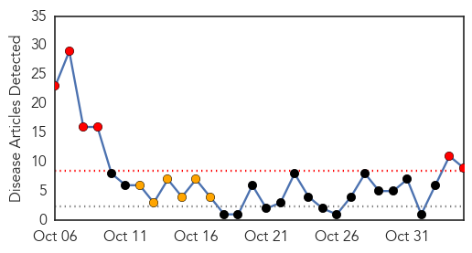
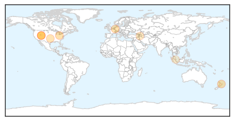

30 Day Trends
Web: 6 alerts, 6 warnings
Twitter: 0 alerts, 0 warnings
Top Articles:
- 0.959
- barfblog
- 0.959
- Hedgehog
- 0.925
- Hepatitis A virus likely of animal origin
- 0.865
- Cherokee Nation conducts study to eliminate hepatitis C among Natives
- 0.830
- Ogden hospital may have exposed 4,800 patients to hepatitis C
- 0.807
- McKay-Dee acted to protect the public's health in hep C scare
- 0.778
- Up to 4,800 patients potentially exposed to hepatitis C at Utah hospital
- 0.681
- Kajaran Medical Center: 16 Patients Contracted Hepatitis-C Due to Cost Cutting
- 0.529
- Hepatitis B exposure trains newborns' immune cells, enhancing their ability to respond to pathogens
Top Tweets:
-
No tweets found for Nov 04, 2015
Web/News Articles
Tweets

Article Locations
Article Confidences